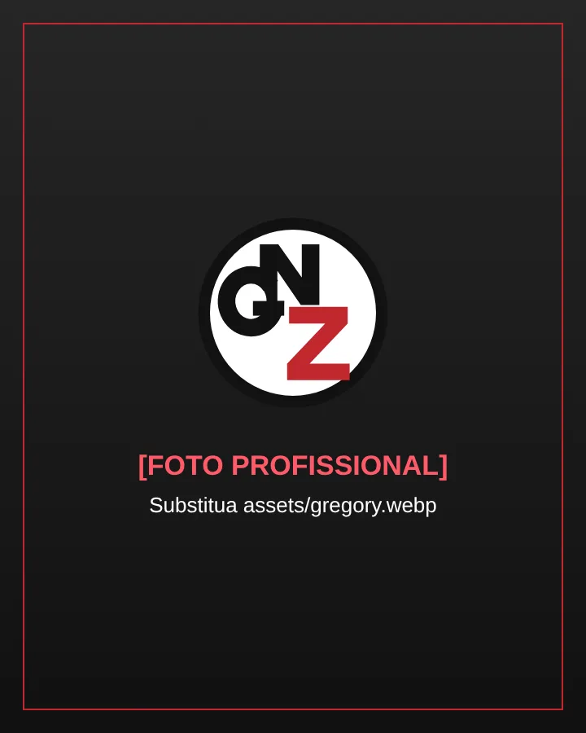

Advogado Trabalhista · OAB/PR 93.853
Orientação e defesa dos seus direitos trabalhistas
Gregory Nascimento Zechmann
Atendimento individualizado para trabalhadores que desejam entender sua situação e conhecer os caminhos previstos na legislação.
Atendimento online e presencial em [CIDADE DE ATENDIMENTO]

Direito do Trabalho
Áreas de atuação
Orientação e acompanhamento em questões que surgem durante e após a relação de emprego.
-
Rescisão e verbas rescisórias
Conferência dos valores devidos no fim do contrato, como aviso prévio, férias, 13º salário e multa do FGTS.
-
Horas extras e jornada
Análise de jornada, intervalos, banco de horas, trabalho noturno e registros de ponto.
-
Vínculo sem carteira assinada
Reconhecimento da relação de emprego e dos direitos decorrentes quando não houve registro formal.
-
FGTS e recolhimentos
Verificação de depósitos de FGTS e contribuições previdenciárias que deveriam ter sido feitos.
-
Assédio e condições de trabalho
Orientação em situações de assédio moral, rescisão indireta e descumprimento de obrigações pelo empregador.
-
Acidente e doença do trabalho
Estabilidade, afastamentos e responsabilidades em casos de acidente ou doença relacionada ao trabalho.
Atendimento
Como funciona o atendimento
Um processo simples, com comunicação clara em cada etapa.
-
Primeiro contato
Você envia uma mensagem pelo WhatsApp e relata, de forma breve, o que aconteceu.
-
Análise do caso
As informações e os documentos disponíveis são examinados considerando as particularidades da sua situação.
-
Orientação jurídica
Você recebe uma explicação clara sobre seus direitos e os caminhos possíveis, para decidir com segurança.
Sobre
Gregory Nascimento Zechmann
Advogado Trabalhista · OAB/PR 93.853
Atuação voltada à orientação e defesa dos direitos trabalhistas, com atendimento individualizado e análise das particularidades de cada caso.
- Formação
- [FORMAÇÃO ACADÊMICA]
- Especializações
- [ESPECIALIZAÇÕES]
- Atendimento
- Online e presencial em [CIDADE DE ATENDIMENTO]
Informação
Perguntas frequentes
Respostas gerais e informativas. Cada situação deve ser analisada individualmente.
Qual o prazo para entrar com uma ação trabalhista?
Pela Constituição Federal (art. 7º, XXIX) e pela CLT (art. 11), o trabalhador tem até 2 anos após o fim do contrato para ajuizar a ação. Nela, é possível discutir os direitos dos últimos 5 anos, contados da data em que a ação é proposta. Por isso, quanto antes a situação for analisada, menor o risco de perder parte dos direitos.
O que é rescisão indireta?
É o encerramento do contrato por falta grave do empregador, prevista no art. 483 da CLT — por exemplo, atraso reiterado de salários, ausência de depósitos de FGTS, rigor excessivo ou exigência de tarefas além do contratado. Reconhecida pela Justiça do Trabalho, ela gera direitos semelhantes aos da dispensa sem justa causa. Como exige comprovação, é recomendável buscar orientação antes de deixar o emprego.
Trabalhei sem carteira assinada. Tenho direitos?
Sim, quando estiverem presentes os requisitos da relação de emprego (arts. 2º e 3º da CLT): trabalho prestado pessoalmente, com habitualidade, mediante salário e sob subordinação. Nesse caso, é possível pedir o reconhecimento do vínculo, a anotação na carteira e os direitos correspondentes, como férias com 1/3, 13º salário e FGTS. Mensagens, comprovantes de pagamento e testemunhas ajudam a demonstrar a relação.
Como saber se meu FGTS foi depositado?
O empregador deve depositar mensalmente 8% da remuneração na conta vinculada do trabalhador (Lei 8.036/1990). Você pode consultar o extrato pelo aplicativo FGTS, da Caixa Econômica Federal, ou em uma agência da Caixa. Se houver meses sem depósito, os valores podem ser cobrados.
Quais documentos devo reunir antes de conversar com um advogado?
Reúna o que tiver disponível, mesmo que incompleto:
- Carteira de Trabalho (física ou digital) e contrato de trabalho;
- Contracheques (holerites) e comprovantes de pagamento;
- Termo de rescisão (TRCT) e extrato do FGTS;
- Registros ou anotações de horário;
- Mensagens, e-mails, atestados e nomes de possíveis testemunhas.
O atendimento pode ser feito online?
Sim. O contato inicial, o envio de documentos e as reuniões podem ser feitos à distância, por WhatsApp ou videochamada. Os processos trabalhistas tramitam de forma eletrônica, o que permite acompanhar o caso sem deslocamentos. O atendimento presencial é realizado em [CIDADE DE ATENDIMENTO].